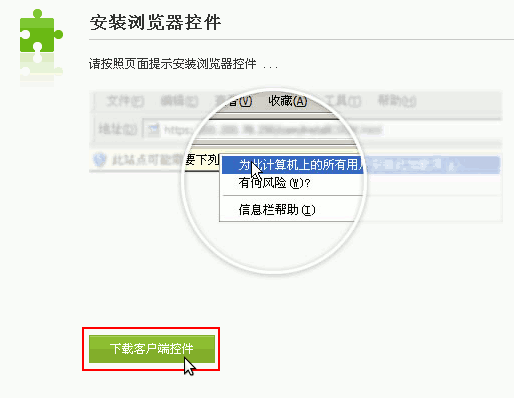

全国中小学生学籍管理系统操作指南
作者：TeliuTe 来源：基础教程网
浏览器设置 返回目录 下一课学籍网是基于IE8浏览器，兼容性很差；
1、安装VPN插件
1）打开网址，提示证书过期，点“继续浏览此网站”，也可以将网址加入信任站点中；
2）提示安装插件时，注意观察浏览器页面上部、下面是否有安装提示，点“安装”；

3）耐心等待下载安装完成；
4）点标签栏上的新建标签，输入学籍网网址；
5）在右上角点工具菜单，或者点一个齿轮，选择“兼容性视图设置”命令；
6）将当前网站网址，添加到列表中，同样复制 https://ksyw.zxxs.emis.edu.cn/ ，也添加进去，最后关闭面板；
7）添加可信站点，点“设置 - Internet 选项 - 安全 - 可信站点 - 站点”，添加 https://ksyw.zxxs.emis.edu.cn/ 到列表中，非https的网址去掉下边的勾；
8）启用下载提示，同样进 Internet 选项 - 安全，点“自定义级别”，滚动条拉到最下边，找到“下载”，启用里面的两项；
9）统一平台的证书，下载后双击安装，自定义存储位置，选择“受信任的根证书颁发机构”，点“确定 - 下一步”；
10）在Internet 选项设置中，点“高级”，滚动条拖到最下边，打勾“打印背景颜色和图像”，避免打印网页空白；
11）360浏览器的兼容性视图，打开网页后，在地址栏右边，一个闪电图标，点击选择“兼容模式”；
12）登录学籍网之后，在空白处点右键，选择“切换兼容性模式 - IE8”；
13）设置完成后，一定要点右下角“注销”，不要直接关浏览器，以免会话没有结束，要等半个小时，不想等的话，就用另一个管理账号登录，强制下线；
14）如果注销失败，或者无意中关闭了网页，只要浏览器窗口没关闭，重新新建标签页，输入网址 http://10.232.191.2:8003/jsp/public/mainR.jsp# 点转到，就可以重新打开学籍网
本节学习了兼容性设置的基础知识，如果你成功地完成了练习，请继续学习下一课内容；
本教程由TeliuTe制作|著作权所有
基础教程网：http://teliute.org/
美丽的校园……
转载和引用本站内容，请保留作者和本站链接。